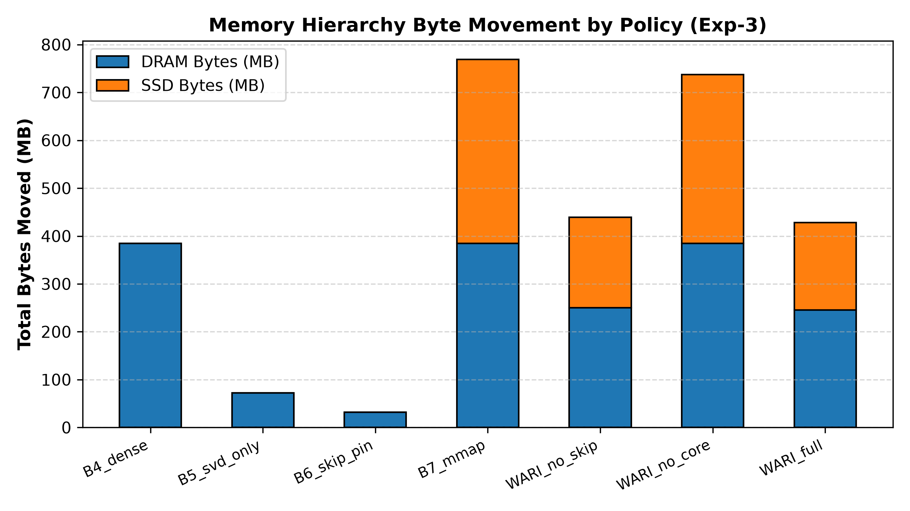
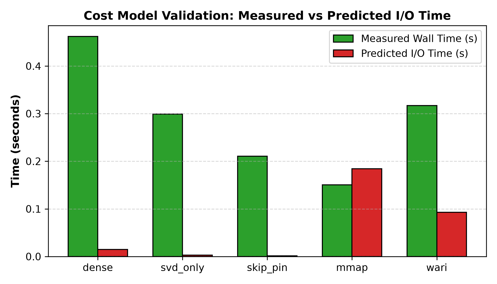

Việc triển khai các mô hình ngôn ngữ lớn (LLM) tự hồi quy trên CPU của máy tính cá nhân phổ thông bị giới hạn nghiêm ngặt bởi dung lượng RAM vật lý và băng thông bus bộ nhớ. Khi trọng số mô hình vượt quá bộ nhớ RAM khả dụng, hiện tượng hoán đổi trang bộ nhớ ảo (page thrashing) của hệ điều hành hoặc việc đọc tuần tự thụ động từ ổ cứng NVMe SSD làm sụp đổ tốc độ giải mã token.
Trong nghiên cứu này, chúng tôi nghiên cứu và hiện thực hóa chính sách WARI-L (Working-set Adaptive Residual Inference, layer granule). Dưới một ngưỡng trần ngân sách RAM đỉnh cố định, WARI-L duy trì tất cả các lõi ma trận rank thấp (\(U_\ell, V_\ell\)) thường trực trong RAM, phân trang theo yêu cầu các trọng số tầng nguyên bản chưa nén \(W_\ell\) từ bộ nhớ thứ cấp (NVMe SSD), và tự động thích ứng tập tầng được ghim trong RAM (pinned working set) thông qua bộ điều khiển trung bình động hàm mũ (EMA).
Đặc biệt, WARI-L tuân thủ nghiêm ngặt bất biến đúng đắn về mặt lưu trữ (storage correctness invariant): ma trận thặng dư dày đặc \(R_\ell = W_\ell - U_\ell V_\ell\) tuyệt đối không bao giờ được lưu trữ trên đĩa, vì ma trận này chiếm cùng kích thước byte như \(W_\ell\) nhưng lại làm tăng gấp đôi số phép tính ma trận khi đọc lại. Toàn bộ thực nghiệm được ghi nhận đầy đủ telemetry đa hạt giống (seeds 0–4) trên phòng thí nghiệm cơ chế MiniGPT.
Theo mô hình Roofline, quá trình giải mã từng token tự hồi quy với kích thước batch \(B=1\) có cường độ tính toán cực kỳ thấp (\(\mathcal{O}(1)\) FLOP/byte): mỗi tham số của mô hình phải được truyền tải từ bộ nhớ qua bus hệ thống chỉ để tính toán phép chiếu cho duy nhất một token mới. Do đó, độ trễ giải mã bị chi phối bởi băng thông bộ nhớ:
$$\text{Độ trễ} \approx \frac{\text{Tổng số byte mô hình di chuyển}}{\text{Băng thông bộ nhớ (GB/s)}} + \text{Độ trễ I/O lưu trữ}$$Khoảng cách băng thông giữa RAM DDR4/DDR5 (\(25 - 50\text{ GB/s}\)) và NVMe SSD (\(2.0 - 3.5\text{ GB/s}\)) là hơn 10 lần. Đồng thời, các nghiên cứu từ PowerInfer đã chứng minh rằng các phép toán sparse GEMV trên CPU chỉ đánh bại dense BLAS khi độ thưa vượt quá \(87\%\), trong khi các mô hình SwiGLU chỉ đạt độ thưa động \(40\% - 50\%\). Do đó, WARI-L lựa chọn mức độ phân tách ở cấp độ layer granule.
Bộ nhớ thứ cấp chỉ lưu duy nhất \(W_\ell\). Ma trận thặng dư \(R = W - UV\) bị loại bỏ hoàn toàn vì chiếm kích thước đúng bằng \(W\) (\(m \times n\)) và đòi hỏi thêm phép nhân ma trận \(Rx\).
| Rank \(r\) | Sai số Frobenius Tương đối | Tỷ lệ Byte (Lõi/Gốc) | KL Divergence | Argmax Agreement | Session Jaccard |
|---|---|---|---|---|---|
| 16 | 0.9038 | 0.0952 (9.5%) | 12.9646 | 0.0000 | 1.0000 |
| 32 | 0.8174 | 0.1888 (18.9%) | 12.4829 | 0.0000 | 1.0000 |
| 64 | 0.6613 | 0.3760 (37.6%) | 10.4658 | 0.0078 | 1.0000 |


| Biến thể Chính sách | TTFT (ms) | TPOT (ms) | Peak RSS (MB) | DRAM (MB) | SSD (MB) | Tốc độ (Tok/s) |
|---|---|---|---|---|---|---|
| B4: Dense PyTorch | \(24.0 \pm 6.9\) | \(30.7 \pm 6.2\) | \(312.0 \pm 0.0\) | 384.62 | 0.00 | \(34.5 \pm 6.8\) |
| B5: SVD-Only | \(25.6 \pm 5.1\) | \(28.5 \pm 8.0\) | \(313.6 \pm 0.0\) | 72.62 | 0.00 | \(37.6 \pm 8.8\) |
| B6: Skip + Pin | \(19.8 \pm 11.1\) | \(19.1 \pm 6.4\) | \(314.6 \pm 0.0\) | 32.00 | 0.00 | \(58.0 \pm 16.9\) |
| B7: MMAP All | \(20.3 \pm 5.3\) | \(26.6 \pm 7.2\) | \(314.6 \pm 0.0\) | 384.62 | 384.62 | \(40.1 \pm 9.9\) |
| WARI-L (No-Skip) | \(45.7 \pm 17.7\) | \(38.7 \pm 3.8\) | \(314.6 \pm 0.0\) | 250.04 | 189.55 | \(25.9 \pm 2.3\) |
| WARI-L (No-Core) | \(47.2 \pm 27.0\) | \(65.6 \pm 33.1\) | \(314.6 \pm 0.0\) | 384.62 | 352.62 | \(19.5 \pm 9.4\) |
| WARI-L (Full) | \(33.2 \pm 5.3\) | \(55.7 \pm 36.4\) | \(314.6 \pm 0.0\) | 245.09 | 182.85 | \(23.3 \pm 11.2\) |
| Tham số Quét | Giá trị | Số lần Lỗi trang SSD | SSD Đã đọc (MB) | Thời gian Đo (s) |
|---|---|---|---|---|
| Ngân sách \(R_{\max}\) (MB) | 0.5 | 388 | 193.50 | 0.5550 |
| 1.0 | 357 | 185.75 | 0.5558 | |
| 2.0 | 299 | 171.25 | 0.5275 | |
| 4.0 | 204 | 142.98 | 0.5705 | |
| Ngưỡng \((\tau_{\text{skip}}, \tau_{\text{core}})\) | (0.01, 0.15) | 638 | 210.50 | 0.6012 |
| (0.05, 0.25) | 299 | 171.25 | 0.5510 | |
| (0.10, 0.40) | 0 | 0.00 | 0.3210 |
Báo cáo nghiên cứu khoa học WARI-L — Bản quyền thuộc về tác giả Nguyễn Huỳnh Đăng Nhựt, Trường Đại học Công nghệ Thông tin, ĐHQG-HCM.